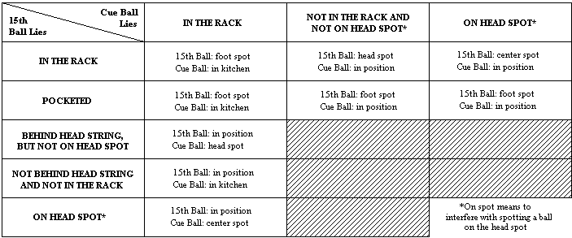

[Standardized World Rules 1997]
Except when clearly contradicted by these additional rules, the General Rules of Pocket Billiards apply.
1.1. OBJECT OF THE GAME. 14.1 is a nomination game. The player must nominate a ball and a pocket. The player is awarded one point for every correctly nominated and pocketed ball on a legal stroke, and is allowed to continue his turn until he either fails to pocket a nominated ball or commits a foul. The player can pocket the first 14 balls, but before he can continue his turn by shooting at the 15th (and last remaining) ball on the table, the 14 pocketed balls are racked as before, except with the apex space vacant. The player then attempts to pocket the 15th ball in a manner so that the racked balls are disturbed and he can continue his run.
The player who scores the pre-determined point total for a game (usually 150 in major tournament play or any agreed upon total in casual play) prior to his opponent, wins the game.
2. PLAYERS. 2, or 2 teams.
3. BALLS USED. Standard set of object balls numbered 1-15, plus cue ball.
4. THE RACK. Standard triangle rack with the apex ball on the foot spot, 1-ball on the racker's right corner, 5-ball on left corner. Other balls are placed at random and must touch their neighbors.
5. SCORING. Any ball legally pocketed counts one point for the shooter.
6. OPENING BREAK. Starting player must either (1) designate a ball and a pocket into which that ball will be pocketed and accomplish the shot, or (2) cause the cue ball to contact a ball and then a cushion, plus cause two object balls to contact a cushion. Failure to meet at least one of the above requirements is a breaking violation. Offender's score is assessed a two point penalty for each breaking violation. In addition, the opponent has the choice of (1) accepting the table in position, or (2) having the balls reracked and requiring the offending player to repeat the opening break. That choice continues until the opening break is not a breaking violation, or until the opponent accepts the table in position. The three successive fouls rule does not apply to breaking violations.
If the starting player scratches on a legal opening break, he is charged with a foul and assessed a one point penalty, which applies toward the "Successive Fouls Penalties." The incoming player is awarded cue ball in hand behind the head string, with object balls in position.
7. RULES OF PLAY.
14.1 - What to do if:

8. ILLEGALLY POCKETED BALLS. All spotted. No penalty.
9. OBJECT BALLS JUMPED OFF THE TABLE. The stroke is a foul. Any jumped ball(s) is spotted after the balls come to rest.
10. CUE BALL AFTER JUMPING OFF THE TABLE OR SCRATCH. Incoming player has cue ball in hand behind the head string, unless the provision of Rule of Play 7.2., 7.5. or 12." (below) apply to the offender's foul and dictate alternate choices or procedures.
11. PENALTIES FOR FOULS. One point deducted for each foul; NOTE: more severe penalties for deliberate fouls (Rule of Play 7.5.) and third "Successive Fouls" (12. below). Incoming player accepts cue ball in position unless foul was a jumped cue ball, pocket scratch, deliberate foul (Rule of Play 7.5.) or third successive foul.
12. SUCCESSIVE FOUL PENALTIES. When a player commits a foul, he is penalized one point (or more as appropriate) and a notation is made and posted by the scorer that he is "on a foul." The player remains "on a foul" until his next shot attempt, at which time he may remove the foul by successfully pocketing a called ball, or completing a legal safety. If he fails to meet these requirements on his next turn at the table, he is penalized one point. The notation is changed to "on two fouls." If he fails to meet the requirements of successfully pocketing a called ball or completing a legal safety on his third consecutive turn at the table, a penalty of fifteen points is assessed.
The commission of a third successive foul automatically clears the offender's record of fouls.
All balls are then reracked and the player committing the infraction is required to break as at the beginning of the game. Rules for the opening break apply.
It should be emphasized that successive fouls must be committed in successive turns (or playing attempts), not merely in successive innings. For example, if a player ends inning 6 with a foul, steps to the table for inning 7 and fouls (he is "on two fouls"), and then starts inning 8 with a legally pocketed ball before scratching on his second shot attempt of the inning, he has not committed three successive fouls, even though there were fouls in three successive innings. As soon as he legally pocketed the ball to start inning 8, he cleared the two fouls. he is, of course, "on one foul" when he plays the first stroke attempt of inning 9.
13. SCORING NOTE. The deduction of penalty points can result in negative scores. A running score can read "minus one," "minus two," "minus fifteen," etc. (a player can win a game with a score of 150 while his opponent has scored but two fouls. The final score would read 150 to -2.)
If a player fouls on a shot that has not pocketed a ball, the point penalty is deducted from his score at the end of the previous inning. If a player fouls and pockets a ball on the same shot, that ball is spotted (not scored) and the point penalty is deducted from his score at the end of the previous inning.